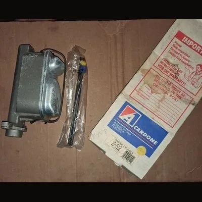
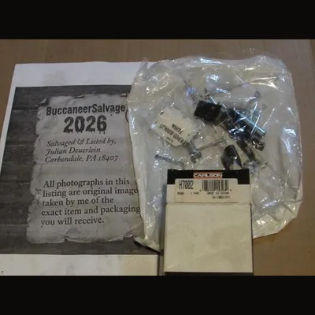
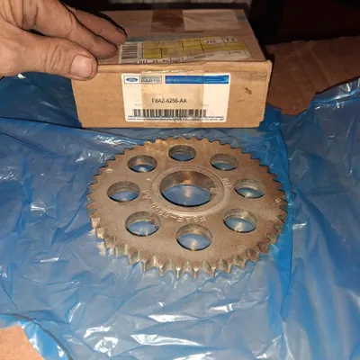
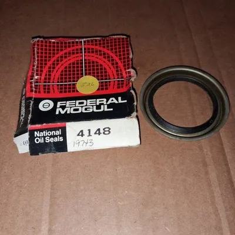
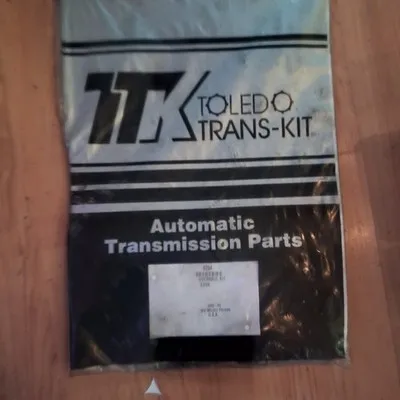
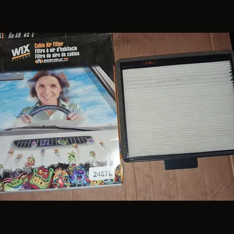

Distributor Rotors
1957-1983 KEM 215X Distributor Rotor NOS Ford Mustang Fairlane F-100 Thunderbird
215X
Fits 1958-1976 Lincoln Continental · 1957-1976 Ford F-100 (2077 listed)
$12.99
View details56 parts whose listing names at least one Lincoln vehicle, mostly engine parts, ignition & tune-up and brakes & suspension. Fit depends on year, model and engine, so check the full vehicle list on each part page or message us before you buy.
56 parts
Online checkout through Square. Ships from Carbondale, PA, or pick up by confirmed appointment only. Fitment question? Message us.
215X
Fits 1958-1976 Lincoln Continental · 1957-1976 Ford F-100 (2077 listed)
$12.99
View details
AR181
Fits 1981-1983 Lincoln Mark VI · 1981-1991 Ford Bronco (983 listed)
$12.99
View details
SW95AX
Fits 1985-1989 Lincoln Town Car · 1980-1983 Lincoln Mark VI (1304 listed)
$24.99
View details
257
Fits 1984 Lincoln Continental · 1984 Lincoln Town Car (808 listed)
$12.99
View details
LX218T
Fits 1984-1987 Lincoln Continental · 1984-1992 Lincoln Mark VII (2372 listed)
$35.99
View details
269
Fits 1988-1994 Lincoln Continental · 1984-1997 Ford F-150 (1848 listed)
$12.99
View details
139-101
Fits 1986-1994 Lincoln Continental · 1982-1983 Lincoln Mark VI (2927 listed)
$17.99
View details
216X
Fits 1958-1974 Lincoln Continental · 1957-1970 Ford Fairlane (2996 listed)
$24.99
View details
TW42
Fits 1990-1991 Lincoln Continental · 1995 Lincoln Town Car (1707 listed)
$18.99
View details
U12GX
Fits 1975-1985 Lincoln Continental · 1975-1986 Ford Thunderbird (570 listed)
$24.99
View details
PS149X
Fits 1993-1998 Lincoln Mark VIII · 1966-1996 Ford Bronco (515 listed)
$14.99
View details
10-1518
Fits 1980 Lincoln Continental · 1972 Lincoln Mark IV (564 listed)
$28.99
View details
14082
Fits 1993-2002 Lincoln Continental · 2000-2001 Lincoln LS (2063 listed)
$12.99
View details
H2102
Fits 1970-1987 Lincoln Continental · 1976-1996 Ford Bronco (1059 listed)
$12.99
View details
H2545
Fits 1968-1971 Lincoln Mark III · 1972-1974 Lincoln Mark IV (3000 listed)
$12.99
View details
H4090-2
Fits 1980-1990 Lincoln Continental · 1980-1983 Lincoln Mark VI (1860 listed)
$12.99
View details
H5064
Fits 2002 Lincoln Blackwood · 1995-1998 Lincoln Town Car (3000 listed)
$13.99
View details
H5093
Fits 2006-2008 Lincoln Mark LT · 2008-2017 Buick Enclave (795 listed)
$12.99
View details
H5412
Fits 1973-1979 Lincoln Continental · 1973-1976 Lincoln Mark IV (3000 listed)
$12.99
View details
H5628Q
Fits 1998-2002 Lincoln Navigator · 1997-2002 Ford Expedition (1296 listed)
$13.99
View details
H5825Q
Fits 2009-2014 Lincoln MKS · 2010-2014 Lincoln MKT (344 listed)
$13.99
View details
H7002
Fits 1999-2002 Lincoln Continental · 1998-2002 Lincoln Town Car (253 listed)
$13.99
View details
H7302
Fits 2003-2011 Lincoln Town Car · 2004-2008 Chrysler Pacifica (884 listed)
$20.99
View details
H7303
Fits 2007-2011 Lincoln Town Car · 2002 Lincoln Blackwood (11 listed)
$12.99
View details
Victor 47529
Fits 1974-1976 Lincoln Continental · 1978-1986 Ford Bronco (693 listed)
$17.99
View details
2346
Fits 1982-1987 Lincoln Continental · 1984-1992 Lincoln Mark VII (649 listed)
$139.99
View details
3L5E-AE
Fits 2003-2005 Lincoln LS · 2005-2011 Lincoln Town Car (826 listed)
$39.99
View details
F8AZ-6256-AA
Fits 1993-1998 Lincoln Mark VIII · 1998-2004 Lincoln Navigator (1628 listed)
$29.99
View details
F8AZ-6256-BA
Fits 1993-1998 Lincoln Mark VIII · 1998-2004 Lincoln Navigator (1628 listed)
$29.99
View details
33038
Fits 1958-1968 Lincoln Continental · 1959-1966 Buick LeSabre (2679 listed)
$19.99
View details
33039
Fits 1958-1968 Lincoln Continental · 1959-1966 Buick LeSabre (2679 listed)
$12.99
View details
33189
Fits 1991-2003 Lincoln Town Car · 1985-1986 Chevrolet Astro (510 listed)
$15.99
View details
DR374
Fits 1986-1990 Lincoln Town Car · 1988-1996 Ford Bronco (429 listed)
$20.99
View details
DR374HP
Fits 1986-1990 Lincoln Town Car · 1988-1996 Ford Bronco (339 listed)
$20.99
View details
E319
Fits 1984-1990 Lincoln Town Car · 1983-1992 Ford Bronco (2935 listed)
$19.99
View details
KVR202B
Fits 1963-1991 Lincoln Continental · 1966-1989 Ford Bronco (2855 listed)
$29.99
View details
TV86X
Fits 1957-1959 Lincoln Capri · 1958-1962 Lincoln Continental (601 listed)
$24.99
View details
7071
Fits 1981-1997 Lincoln Town Car · 1976-1996 Ford Bronco (1569 listed)
$20.99
View details
ASF-42C
Fits 1988-1992 Lincoln Mark VII · 1990-1995 Ford Bronco (744 listed)
$19.99
View details
3622
Fits 1988-1990 Lincoln Continental · 2000-2008 Ford Taurus (1071 listed)
$17.99
View details
Timken 4148
Fits 1998-2002 Lincoln Navigator · 1975-2003 Ford F-150 (1609 listed)
$14.99
View details
6815
Fits 1980 Lincoln Versailles · 1963-1970 Ford Falcon (1766 listed)
$18.99
View details
PT-1694
Fits 1975-1976 Lincoln Continental · 1975-1976 Ford Bronco (251 listed)
$27.99
View details
PT212
Fits 1984-1997 Lincoln · 1984-1997 Ford F-150 (11 listed)
$39.99
View details
66935
Fits 2007-2015 Lincoln MKX · 2007-2014 Ford Edge (263 listed)
$18.99
View details
BH177238
Fits 1980 Lincoln Continental · 1980-1983 Lincoln Mark VI (354 listed)
$19.99
View details
BH177239
Fits 1980 Lincoln Continental · 1980-1983 Lincoln Mark VI (421 listed)
$15.99
View details
269-2465
Fits 1980-1983 Lincoln Mark VI · 1981-2002 Lincoln Town Car (604 listed)
$14.99
View details
VR166T
Fits 1963-1964 Lincoln Continental · 1963-1974 Ford Galaxie 500 (236 listed)
$33.99
View details
PS-149
Fits 1991-1998 Lincoln Continental · 1966-1996 Ford Bronco (681 listed)
$17.99
View details
V201
Fits 1982-1990 Lincoln Town Car · 1980-1993 Ford Mustang (237 listed)
$14.99
View details
8204
Fits 1995-1999 Lincoln Continental · 1995-1999 Ford Taurus (104 listed)
$64.99
View details
24876
Fits 1998-2004 Lincoln Navigator · 1997-2004 Ford Expedition (717 listed)
$26.99
View details
33049
Fits 1977-1979 Lincoln Continental · 1977-1979 Lincoln Versailles (374 listed)
$12.99
View details
51372
Fits 1991-2017 Lincoln · 1996-2001 Ford F-100 Ranger (11 listed)
$13.99
View details
57302
Fits 2002-2006 Lincoln LS · 2003-2005 Ford Thunderbird (51 listed)
$12.99
View details